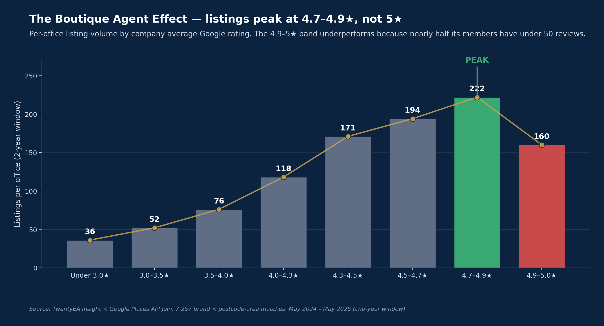
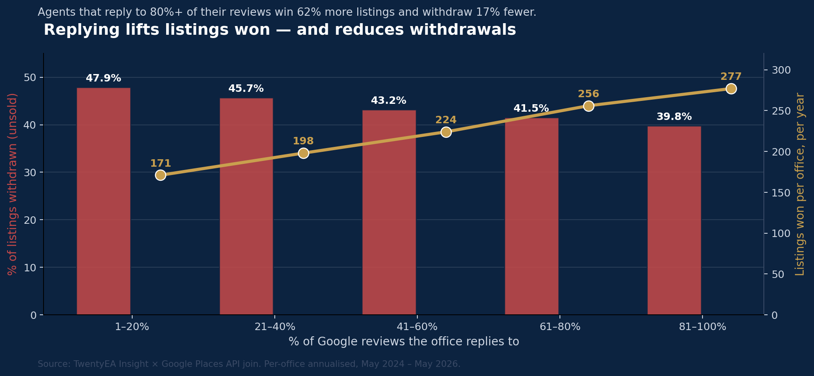
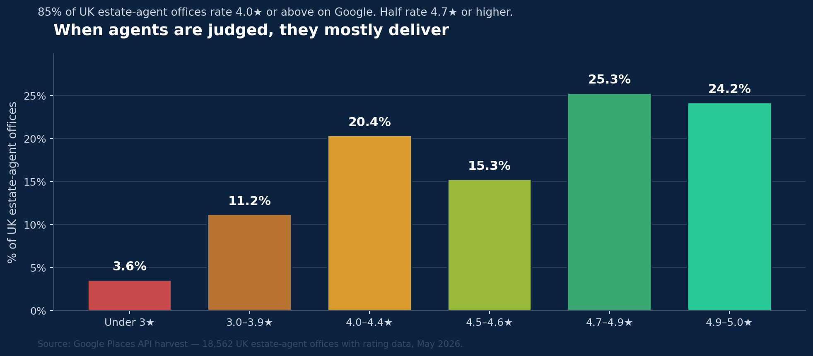
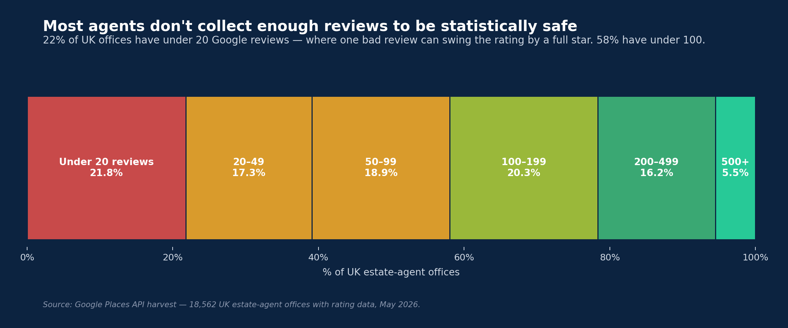
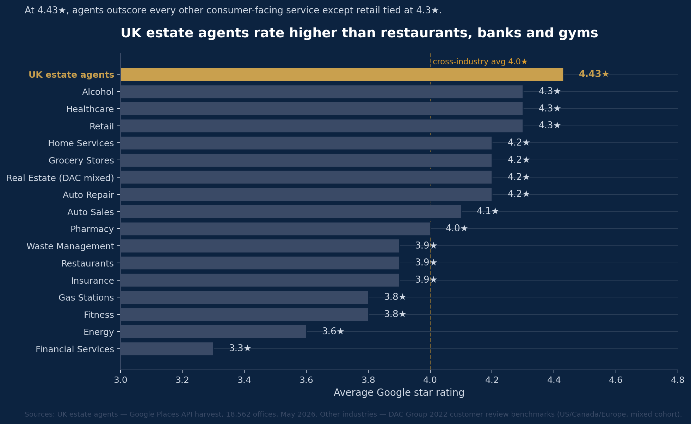
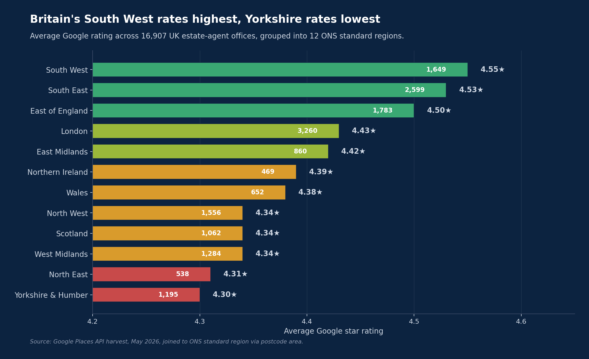
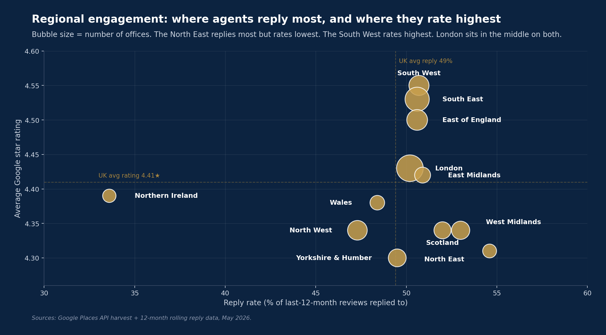
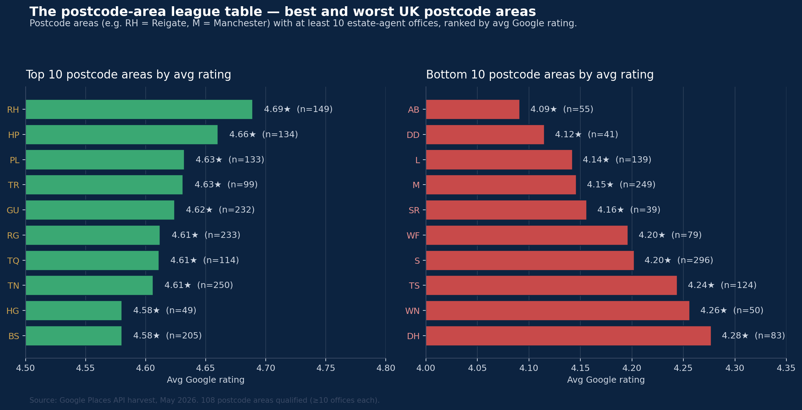

The most comprehensive study of UK estate agent reputation ever published. 20,061 offices, every postcode area in the country.
Get the full report
Free. We'll email you the full report plus quarterly updates as new editions land.
We'll use this to send you the report and quarterly updates. Unsubscribe anytime. We never share your data.
Welcome — the full report is below.
We've also emailed you a copy. Scroll down to start reading.
20,061
UK offices
122
Postcode areas
2.88M
Individual Google reviews analysed
Why this report exists
The UK estate agency industry has never had an independent, data-driven reputation benchmark. Vendors choose agents on shopfront feel, a neighbour's word, and the headline fee. The data the public actually leaves behind — hundreds of thousands of Google reviews, replies, star ratings, withdrawal rates — has never been pulled together in one place.
The Reputation – State of the Nation changes that. We've built the first complete map of UK estate agent reputation: every office, every postcode, validated against the ViewAgents Data Harvest, then joined to real transaction outcomes. The findings are unambiguous. Reviews matter. The agent you choose materially affects whether your property actually sells.
The headline findings
Four numbers that should reset how the industry — and consumers — talk about reputation. Listings figures are totals across a two-year window (May 2024 – May 2026) chosen to smooth annual variability.
The Headline Finding
2.3×
more property sales closed per office over the two-year period analysed
Top-rated agents (4.5★ and above) close 2.3× more property sales per office over the two-year period analysed than agents below 4.5★. It's a compounding effect: they win 77% more new listings, AND they retain 29% more of them. Bottom line — if your agent is highly rated, you're far more likely to actually sell.
The Volume Multiplier
3×
more business per office over the two-year period analysed
The 4.5★+ band takes on roughly 3× more new instructions per office over the two-year period analysed than agents below 4★, and 77% more than agents below 4.5★. The market is voting with its instructions — quietly, but decisively.
The Boutique Agent Effect
5★
on 30 reviews doesn't tell you the full story
The 4.9-5★ band actually does less business than the band below it — not because the agents are worse, but because 45% of them sit on under 50 reviews. A handful of perfect early scores pin the rating at 5★. Read review count alongside star rating, always.
The Engaged Agent
47%
of UK agents ignore most of their reviews
Nearly half of UK estate agents reply to fewer than half of their Google reviews. Engaged agents — those replying to 80%+ — carry higher ratings, retain more listings, and signal to both future clients and Google's local-search algorithm that someone is actually paying attention.
The Boutique Agent Effect
When you group estate agents by their average Google star rating, the highest-rated band — 4.9 to 5★ — actually processes fewer listings per office than the band just below it. The reason isn't quality. It's review volume.

The 4.9–5★ band processes 28% fewer listings per office than the 4.7–4.9★ band, despite being rated higher. Nearly half its members sit on fewer than 50 reviews — a handful of perfect early scores pinning the score at 5.0.
The grouped view
Company's average Google rating
Listings per office (2-year window)
Under 4★
64
4★ – 4.5★
142
4.5★ and above
196
4.5★+ agents take on 77% more business per office than agents below 4.5★, and roughly 3× more than agents below 4★.
The unfiltered view — and the boutique band exposed
Company's average Google rating
Listings per office (2-year window)
Under 3★
36
3★ – 3.5★
52
3.5★ – 4★
76
4★ – 4.3★
118
4.3★ – 4.5★
171
4.5★ – 4.7★
194
4.7★ – 4.9★ (peak star rating to volume causality)
222
4.9★ – 5★ (boutique band)
160
Once you control for review count, the gap disappears
Company has…
Listings/office/yr if rated 4.9-5★
Listings/office/yr if rated 4.7-4.9★
Under 50 reviews
75
113
50 – 100 reviews
169
181
100 – 200 reviews
232
241
200+ reviews
304
325
The 5★ band looks weaker overall because 45% of its companies have under 50 reviews. In the 4.7-4.9★ band, only 21% are in that small-review category.
A 5★ rating on 30 reviews tells you very little. A 4.8★ on 300 reviews tells you a lot. The single best predictor of an agent's transaction volume is the combination of high rating and high review count.
For genuine boutique operators (typically below 50 reviews) this is a feature, not a bug — they're deliberately running at lower volumes, and their perfect ratings reflect close attention to every client. Just don't confuse them with the large-scale market leaders. Star rating without review count is a half-finished sentence.
The Headline Finding — top-rated agents close 2.3× more sales
This is the single most consequential number in the report. Top-rated agents (4.5★+) don't just look better on Google — they actually close 2.3× more property sales per office over the two-year period analysed than agents below 4.5★. The effect compounds: they win more listings AND retain a higher share of them. It's often said that boards breed boards — but what's clearly statistically true is that listings create positive reviews, and positive reviews create listings. A wonderful positive flywheel.
Per office
Below 4.5★
4.5★+
Uplift
Listings won (2-year window)
111
196
+77%
% retained (sold not withdrawn)
43%
55%
+29%
Sales completed (2-year window)
48
108
+127%
Sales completed per year
24
54
2.3×
If you're picking an agent, that compound effect is the difference between 24 deals closed in a year and 54 (48 vs 108 across the two-year window we analysed). It's why "who you list with" is the most consequential decision a UK home-seller makes.
Company's average Google rating
% retained (sold)
% withdrawn (unsold)
Under 3★
33.7%
66.3%
3★ – 3.5★
37%
63%
3.5★ – 4★
38.1%
61.9%
4★ – 4.3★
42.5%
57.5%
4.3★ – 4.5★
51.4%
48.6%
4.5★ – 4.7★
54.8%
45.2%
4.7★ – 4.9★
56.3%
43.7%
4.9★ – 5★
53.5%
46.5%
Top-rated agents close 2.3× more property sales per office over the two-year period analysed than agents below 4.5★. They win more listings AND retain more of them.
The Engaged Agent — replying isn't just etiquette
Reply rate is a softer signal than star rating, but it's far from neutral. Agents who reply to 80%+ of their reviews retain about 7% more listings than agents who reply to under 20%, emphasising their all-round commitment to customer service.

Reply rate vs. transaction outcomes. Agents in the 81–100% reply band win 277 listings per office over the two-year period analysed and withdraw 39.8% — versus 171 listings over the same period and 47.9% for the 1–20% band.
% of reviews replied to
Listings per office (2-year window)
% of listings withdrawn
1 – 20%
171
47.9%
20 – 50%
190
48.9%
50 – 80%
185
46.1%
80 – 100%
189
44.3%
The real value of reply rate is what it signals to future clients reading reviews — and to Google's local-search ranking. An office that consistently replies signals attentiveness. One that ignores reviews signals indifference. The data shows the kind of agent who engages with feedback also happens to be the kind who closes more deals.
When agents are judged, they deliver
The complaint culture around estate agents is loud, but the data is quietly the other way. Across 18,562 UK estate-agent offices with Google ratings, 85% sit at 4.0★ or higher — and nearly half rate 4.7★ or above. When an agent is judged, they overwhelmingly get it right.

Distribution of Google ratings across 18,562 UK estate-agent offices, May 2026. The shape is left-skewed — most agents perform well, a small tail performs poorly.
But under that strong rating picture sits a structural problem: most agents don't have enough reviews to be statistically safe. Just over a fifth of UK offices (22%) have fewer than 20 Google reviews. 58% have under 100. For those agents, one bad customer experience can swing their rating by a full star — and one missed review request leaves their reputation hostage to the loudest voice.

Distribution of UK estate-agent offices by total Google review count. 22% are operating in the <20-review zone where a single one-star review materially moves their headline number.
The industry has earned its ratings. What it hasn't done — yet — is build the discipline of routinely asking for them. Agents who run a structured review-request process collect 5–10× the review volume of those who don't, and stabilise their ratings against single-event swings. That's not vanity. That's operational risk management. And it's an entirely solvable problem.
How estate agents stack up against other industries
UK estate agents now rate higher than restaurants, banks, gyms, car dealers, healthcare and high-street retail on Google. The narrative that estate agents are "the worst" isn't supported by the underlying customer data.

UK estate agents (4.43★, our analysis) compared against DAC Group's 2022 cross-industry customer review benchmark study (16 sectors, US/Canada/Europe mixed cohort). Agents lead every other consumer-facing service tracked, including retail tied at 4.3★.
A caveat worth being honest about: estate agents handle far fewer transactions per year than restaurants or supermarkets, so the review volume isn't directly comparable. An office that lists 100 properties a year will never compete on review count with a restaurant serving 100 covers a day. The right way to read this chart isn't "agents collect more reviews than other industries" — they don't. It's "when an agent is judged, the verdict is stronger than nearly anyone else."
The follow-on question is the obvious one: if 85% of UK agents already rate 4★+, why does the industry's reputation in the wider public still lag the data? Two reasons. First, transaction-grade customer experiences are inherently rare — UK owner-occupiers stay in their current home for an average of 17 years (English Housing Survey 2023-24), and even mortgaged owners only move every 10 years or so — so personal experience of estate agents builds slowly. Second, the loudest voices on social media and in tabloid coverage skew negative, while the satisfied majority quietly close their deal and move on. The Google reviews show what actually happened. The narrative shows what people remember.
The national picture — what an average UK estate agent looks like
Across the UK estate agent offices in the dataset, this is the baseline you can hold any individual office against.
Metric
Value
Average Google reviews per office
108 (median 63)
Average Google star rating
4.43★ (median 4.63★)
Average reply rate
52.4% (median 52.9%)
Agents replying to under half of reviews
47.2%
Agents replying to 90%+ of reviews
18.4%
Average 5★ review share
80.8%
Average 1★ review share
11.4%
Nearly 1 in 2 UK estate agents reply to fewer than half of their Google reviews.
The regional picture
National averages hide a real geographic story. UK estate-agent ratings split cleanly along familiar lines — the South leads, the North trails — but the engagement picture is the opposite. Where agents rate lowest, they tend to reply most.

12 ONS standard regions ranked by average Google rating across 16,907 UK estate-agent offices.
The three highest-rated regions — South West (4.55★), South East (4.53★) and East of England (4.50★) — sit cleanly above the UK average. The four lowest-rated regions — Yorkshire & the Humber (4.30★), North East (4.31★), North West (4.34★) and Scotland (4.34★) — sit below it. London is in the middle at 4.43★, which lands exactly on the national mean.
It would be easy to read this as "Southern agents are better". The reality is more interesting. The South contains older, wealthier housing stock, longer-tenured agents, and customers writing reviews for purchases that were emotionally significant — conditions that tend to push ratings up. Northern markets have higher transaction velocity, shorter agency tenures, and — in some postcode areas — a more vocal review culture. The rating differential reflects market conditions more than agent quality.
Regional review volume vs rating
Looking at the volume of reviews per office alongside average rating tells a sharper story — review depth and review quality compound together.

Regional reviews per office vs. average Google rating. Bubble size = number of offices. London has by far the deepest review base per office. The Northern English regions trail on both rating and review depth.
London is the standout, with 229 reviews per office — well above the UK average of 156 — and a respectable 4.46★ rating. The South West, South East and East of England cluster together at high rating but lower review depth (122–151 reviews per office). The Northern English regions, plus Scotland and Wales, sit in the lower-left quadrant on both measures: lower ratings AND fewer reviews per office.
Northern Ireland is the outlier on review depth — just 67 reviews per office despite a respectable 4.39★ average rating. A reasonable read is that the Northern Ireland agent market hasn't yet built the Google-reviews discipline at the same scale as Great Britain.
The postcode-area league table
Zooming in further — the 108 UK postcode areas with at least 10 estate-agent offices. The top end is dominated by affluent commuter belts; the bottom end by larger Northern cities and Scottish urban centres.

RH (Reigate/Crawley) leads at 4.69★ across 149 offices. AB (Aberdeen) trails at 4.09★ across 55 offices. 108 postcode areas qualified — those with at least 10 agent offices each.
A point worth stating plainly: a 4.09★ average is still an objectively strong rating. The worst-rated postcode area in Britain would, in DAC's cross-industry benchmark, sit above gas stations (3.8★), restaurants (3.9★), insurance (3.9★), and financial services (3.3★). The North-vs-South gap is real but narrow — 0.45★ separates RH at the top from AB at the bottom. The full distribution of UK estate-agent quality is much tighter than the headline numbers suggest.
The dataset — how we built this
A reputation report is only as good as the data underneath it. Here's exactly what we used, how we cleaned it, and how it was joined.
20,061 UK estate agent offices — the full universe of branded UK estate agent offices.
Sales Competitive Landscape dataset — new instructions, withdrawals and retained percentages. We use a two-year window (May 2024 to May 2026) rather than a single year to smooth annual market variability. All per-office listings figures in this report are totals over that two-year window.
7,257 brand × postcode-area matches — joining brand to per-area market share in the underlying transaction dataset.
All UK postcode areas — England, Scotland, Wales and Northern Ireland.
Non-trading and virtual-office registered addresses excluded, alongside a small set of non-estate-agent property businesses.
This is the first edition. The Reputation – State of the Nation publishes quarterly, with each edition refreshing the data and adding deeper cuts. Here's what's already on the way.
1
Regional breakdowns — Yorkshire vs South-East vs Scotland comparisons. Coming in v2.
The Trusted Agent 2026 Awards reveal — 7 July 2026. We'll unveil the full classification on the day, including Gold (the top 5%) and Platinum (the top 2%) bands. Categorisation has been carried out using the same dataset described above — but no individual office's classification is being shared in advance.
Footnote — some of these stats might not be absolutely top notch but look at this…
… you should see what's going on in social housing. Across 24 of the biggest UK social housing landlords, the average Google rating is 2.31★ — versus 4.43★ for estate agents. A separate report on that is coming. It deserves its own.